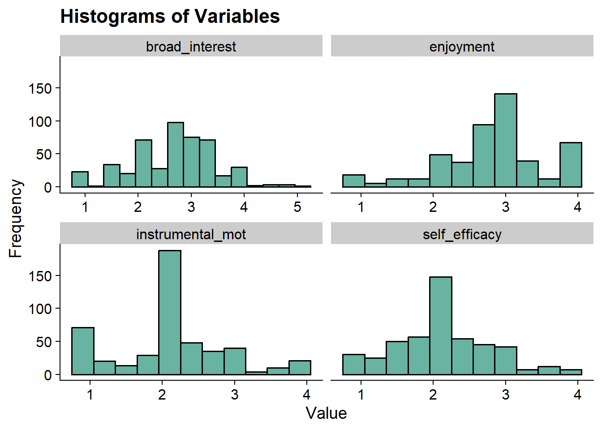
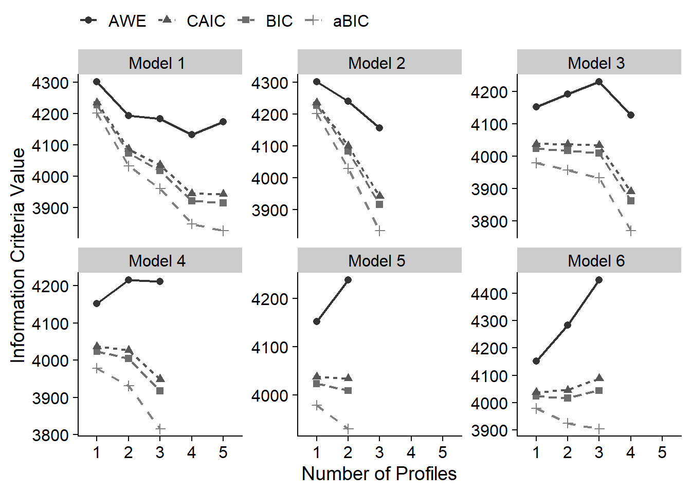
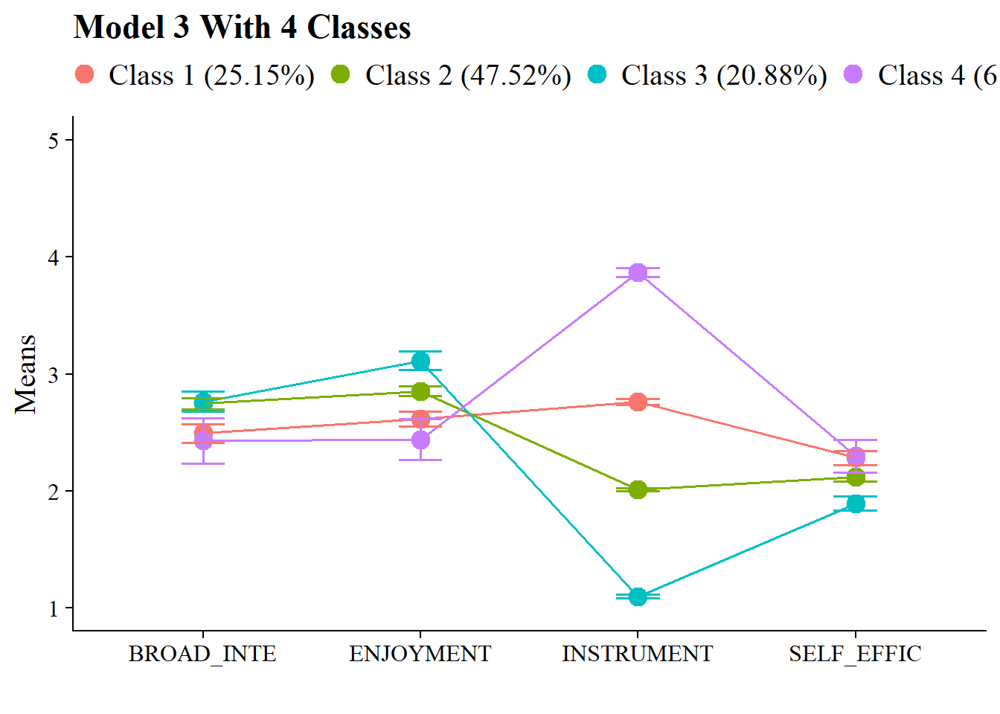
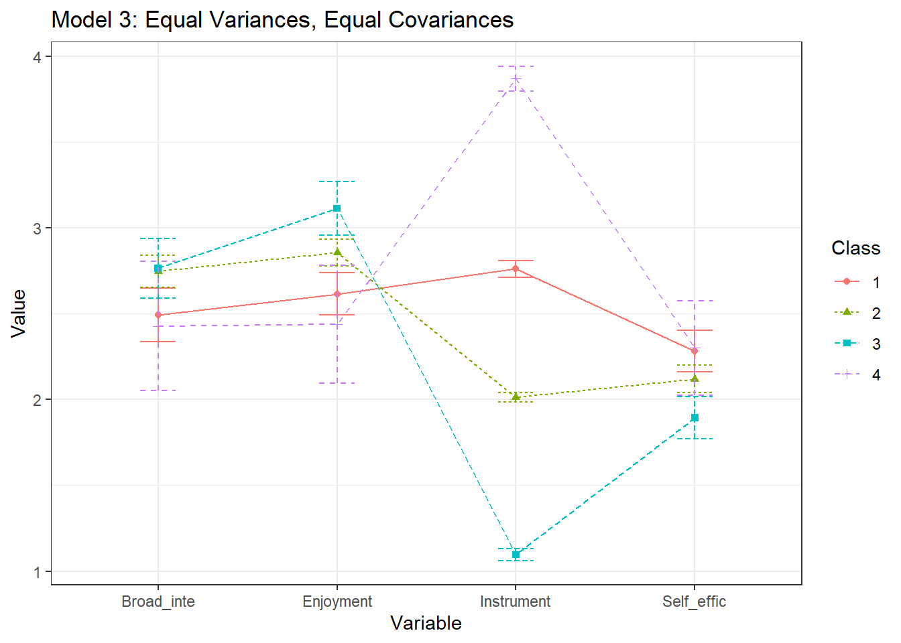
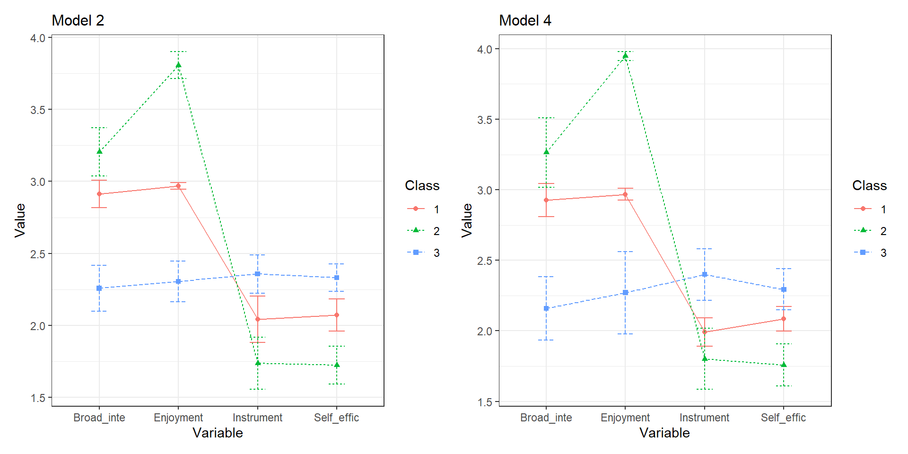

Latent Profile Analysis
Last Updated: 2026-04-01
Latent Profile Analysis
library(tidyverse)
library(MplusAutomation)
library(haven)
library(here)
library(sjPlot)
library(glue)
library(cowplot)
library(pisaUSA15)
library(tidyLPA)Example: PISA Student Data
- The first example closely follows the vignette used to demonstrate the tidyLPA package (Rosenberg, 2019).
- This model utilizes the
PISAdata collected in the U.S. in 2015. To learn more about this data see here. - To access the 2015 US
PISAdata & documentation in R use the following code:
Variables:
broad_interest-
composite measure of students’ self reported broad interest
enjoyment-
composite measure of students’ self reported enjoyment
instrumental_mot-
composite measure of students’ self reported instrumental motivation
self_efficacy-
composite measure of students’ self reported self efficacy
Latent Profile Models
Latent Profile Analysis (LPA) is a statistical modeling approach for estimating distinct profiles of variables and uses continuous - rather than categorical - indicators. Unlike latent class analysis, which uses categorical indicators, LPA models the means, variances, and covariances of continuous indicators within each latent profile.
Terminology for specifying variance-covariance matrix
The code used to estimate LPA models in this walkthrough is from the
tidyLPA package. TidyLPA(source)
is an R package designed to estimate latent profile models using a tidy
framework. It can interface with Mplus via the MplusAutomation package,
enabling the estimation of latent profile models with different
variance-covariance structures.
model 1Profile-invariant / Diagonal: Equal variances, and covariances fixed to 0model 2Profile-varying / Diagonal: Free variances and covariances fixed to 0model 3Profile-invariant / Non-Diagonal: Equal variances and equal covariances- Note: an alternative to Model 3 is freely estimating the covariances
model 4Free variances, and equal covariancesmodel 5Equal variances, and free covariancesmodel 6Profile Varying / Non-Diagonal: Free variances and free covariances
Model 1
Profile-invariant/diagonal:
Equal Variances: Variances are fixed to equality across the profiles (i.e., variances are constrained to be equal for each profile).
Covariances fixed to zero (i.e., the off-diagonal cells of the matrix are zero).
The most parsimonious model and the most restricted.
\[ \begin{pmatrix} \sigma^2_1 & 0 & 0 \\ 0 & \sigma^2_2 & 0 \\ 0 & 0 & \sigma^2_3 \\ \end{pmatrix} \]
Model 2
Profile-varying/diagonal:
Free variances: Variances parameters are freely estimated across the profiles (i.e., variances vary by profile).
Covariances fixed to zero (i.e., the off-diagonal cells of the matrix are zero).
This model is more flexible and less parsimonious than model 1.
\[ \begin{pmatrix} \sigma^2_{1p} & 0 & 0 \\ 0 & \sigma^2_{2p} & 0 \\ 0 & 0 & \sigma^2_{3p} \\ \end{pmatrix} \]
Model 3
Profile-invariant/ non-diagonal or unrestricted:
Equal variances: Variances are fixed to equality across profile. (i.e., variances are constrained to be same for each profile).
Equal Covariances: The covariances are now estimated and constrained to be equal.
- An alternative to Model 3 is freely estimating the covariances (Model 5 here).
\[ \begin{pmatrix} \sigma^2_1 & \sigma_{12} & \sigma_{13} \\ \sigma_{12} & \sigma^2_2 & \sigma_{23} \\ \sigma_{13} & \sigma_{23} & \sigma^2_3 \\ \end{pmatrix} \]
Model 4
Varying means, varying variances, and equal covariances:
Free variances: Variances parameters are freely estimated across profiles (i.e., variances vary by profile).
Equal Covariances: Covariances are constrained to be equal.
This model is also considered to be an extension of Model 3.
\[ \begin{pmatrix} \sigma^2_{1p} & \sigma_{12} & \sigma_{13} \\ \sigma_{12} & \sigma^2_{2p} & \sigma_{23} \\ \sigma_{13} & \sigma_{23} & \sigma^2_{3p} \\ \end{pmatrix} \]
Model 5
Varying means, equal variances, and varying covariances:
Equal variances: Variances are fixed to equality across the profiles. (i.e., variances are constrained to be same for each profile).
Free Covariances: Covariances are now freely estimated across the profiles.
This model is also considered to be an extension of Model 3.
\[ \begin{pmatrix} \sigma^2_{1} & \sigma_{12p} & \sigma_{13p} \\ \sigma_{12p} & \sigma^2_{2} & \sigma_{23p} \\ \sigma_{13p} & \sigma_{23p} & \sigma^2_{3} \\ \end{pmatrix} \]
Model 6
Profile-varying / Non-diagonal:
Free variances: Variances parameters are freely estimated across profiles (i.e., variances vary by profile).
Free Covariances: Covariances are now freely estimated across the profiles.
This is the most complex and unrestricted model. It is also the least parsimonious
Note: The unrestricted model is also sometimes known as Model 4.
\[ \begin{pmatrix} \sigma^2_{1p} & \sigma_{12p} & \sigma_{13p} \\ \sigma_{12p} & \sigma^2_{2p} & \sigma_{23p} \\ \sigma_{13p} & \sigma_{23p} & \sigma^2_{3p} \\ \end{pmatrix} \]
Descriptive Statistics
Load packages
library(naniar)
library(tidyverse)
library(haven)
library(glue)
library(MplusAutomation)
library(here)
library(janitor)
library(gt)
library(tidyLPA)
library(pisaUSA15)
library(cowplot)
library(filesstrings)
library(patchwork)
library(RcppAlgos)
library(psych)Prepare Data
pisa <- pisaUSA15[1:500,] %>%
dplyr::select(broad_interest, enjoyment, instrumental_mot, self_efficacy)Quick Summary
## vars n mean sd median trimmed mad min max range skew
## broad_interest 1 477 2.67 0.77 2.8 2.68 0.89 1 5 4 -0.14
## enjoyment 2 486 2.82 0.72 3.0 2.85 0.59 1 4 3 -0.45
## instrumental_mot 3 479 2.13 0.75 2.0 2.09 0.74 1 4 3 0.45
## self_efficacy 4 477 2.12 0.64 2.0 2.11 0.56 1 4 3 0.40
## kurtosis se
## broad_interest -0.07 0.04
## enjoyment 0.23 0.03
## instrumental_mot 0.11 0.03
## self_efficacy 0.12 0.03Mean Table
ds <- pisa %>%
pivot_longer(broad_interest:self_efficacy, names_to = "variable") %>%
group_by(variable) %>%
summarise(mean = mean(value, na.rm = TRUE),
sd = sd(value, na.rm = TRUE))
ds %>%
gt () %>%
tab_header(title = md("**Descriptive Summary**")) %>%
cols_label(
variable = "Variable",
mean = md("M"),
sd = md("SD")
) %>%
fmt_number(c(2:3),
decimals = 2) %>%
cols_align(
align = "center",
columns = mean
) | Descriptive Summary | ||
| Variable | M | SD |
|---|---|---|
| broad_interest | 2.67 | 0.77 |
| enjoyment | 2.82 | 0.72 |
| instrumental_mot | 2.13 | 0.75 |
| self_efficacy | 2.12 | 0.64 |
Histograms
data_long <- pisa %>%
pivot_longer(broad_interest:self_efficacy, names_to = "variable")
ggplot(data_long, aes(x = value)) +
geom_histogram(binwidth = .3, fill = "#69b3a2", color = "black") +
facet_wrap(~ variable, scales = "free_x") +
labs(title = "Histograms of Variables", x = "Value", y = "Frequency") +
theme_cowplot()
Enumeration using tidyLPA
Enumerate using estimate_profiles():
- Estimate models with profiles \(K = 1:5\)
- Model has 4 continuous indicators
- Default variance-covariance specifications (model 1)
- Change
variancesandcovariancesto indicate the model you want to specify, in this example, we are estimating all six models.
# Run LPA models
lpa_fit <- pisa %>%
estimate_profiles(1:5,
package = "MplusAutomation",
ANALYSIS = "starts = 500 100;",
OUTPUT = "sampstat residual tech11 tech14",
variances = c("equal", "varying", "equal", "varying", "equal", "varying"),
covariances = c("zero", "zero", "equal", "equal", "varying", "varying"),
keepfiles = TRUE)
# Compare fit statistics
get_fit(lpa_fit)
# Move files to folder
files <- list.files(here(), pattern = "^model")
move_files(files, here("lpa_enumeration"), overwrite = TRUE)For reference, here is the Mplus syntax for different specifications:
Fixed covariance to zero (DEFAULT):
broad_interest WITH enjoyment@0;
Free covariance:
broad_interest WITH enjoyment;
Equal covariances:
%c#1%
broad_interest WITH enjoyment (1);
%c#2%
broad_interest WITH enjoyment (1);
Equal variance (DEFAULT):
%c#1%
broad_interest (1);
%c#2%
broad_interest (1);
Free variance:
mth_scor-bio_scor;
You can also open the tidyLPA .inp files to see the
specifications.
Table of Fit
Evaluate each model specification separately using fit indices.
After examining the outputs (and increasing the random starts where necessary), there are a few models excluded from analysis:
Model 2:
Profile 4
Profile 5
Model 3:
- Profile 5
Model 4:
Profile 4
Profile 5
Model 5:
Profile 3
Profile 4
Profile 5
Model 6:
Profile 4
Profile 5
source(here("functions", "enum_table_lpa.R"))
# Read in model
output_enum <- readModels(here("lpa_enumeration"), quiet = TRUE)
# Preview with numbered rows
enum_fit(output_enum)## # A tibble: 29 × 12
## row Title Parameters LL BIC aBIC CAIC AWE BLRT_PValue
## <int> <chr> <dbl> <dbl> <dbl> <dbl> <dbl> <dbl> <dbl>
## 1 1 Model 1 With 1 C… 8 -2089. 4227. 4201. 4235. 4300. NA
## 2 2 Model 1 With 2 C… 13 -1997. 4074. 4032. 4087. 4193. 0
## 3 3 Model 1 With 3 C… 18 -1953. 4017. 3960. 4035. 4183. 0
## 4 4 Model 1 With 4 C… 23 -1889. 3921. 3848. 3944. 4133. 0
## 5 5 Model 1 With 5 C… 28 -1871. 3915. 3826. 3943. 4172. 0
## 6 6 Model 2 With 1 C… 8 -2089. 4227. 4201. 4235. 4300. NA
## 7 7 Model 2 With 2 C… 17 -1989. 4083. 4029. 4100. 4239. 0
## 8 8 Model 2 With 3 C… 26 -1878. 3917. 3834. 3943. 4156. 0
## 9 9 Model 2 With 4 C… 35 -1851. 3919. 3808. 3954. 4241. 0
## 10 10 Model 2 With 5 C… 44 -1825. 3923. 3783. 3967. 4327. 0
## # ℹ 19 more rows
## # ℹ 3 more variables: T11_VLMR_PValue <dbl>, BF <dbl>, cmPk <dbl>select_models <- enum_fit(output_enum) %>%
slice( # Remove the models that we don't want to consider!!!! Because we looked at every single output, we know which models did not converge, thus we exclude them.
# Model 2
-9, -10,
# Model 3
-15,
# Model 4
-19, -20,
# Model 5
-23, -24, -25,
# Model 6
-29, -30
)
enum_table(select_models, 1:5, 6:8, 9:12, 13:15, 16:17, 18:20)| Model Fit Summary Table1 | ||||||||||
| Classes | Par | LL | BIC | aBIC | CAIC | AWE | BLRT | VLMR | BF | cmPk |
|---|---|---|---|---|---|---|---|---|---|---|
| Model 1 | ||||||||||
| Model 1 With 1 Classes | 8 | −2,088.66 | 4,226.84 | 4,201.45 | 4,234.84 | 4,300.36 | – | – | 0.0 | <.001 |
| Model 1 With 2 Classes | 13 | −1,996.51 | 4,073.50 | 4,032.24 | 4,086.50 | 4,192.97 | <.001 | <.001 | 0.0 | <.001 |
| Model 1 With 3 Classes | 18 | −1,952.98 | 4,017.38 | 3,960.25 | 4,035.38 | 4,182.81 | <.001 | 0.009 | 0.0 | <.001 |
| Model 1 With 4 Classes | 23 | −1,889.43 | 3,921.23 | 3,848.23 | 3,944.23 | 4,132.61 | <.001 | <.001 | 0.0 | 0.046 |
| Model 1 With 5 Classes | 28 | −1,870.91 | 3,915.16 | 3,826.28 | 3,943.15 | 4,172.48 | <.001 | 0.018 | – | 0.954 |
| Model 2 | ||||||||||
| Model 2 With 1 Classes | 8 | −2,088.66 | 4,226.84 | 4,201.45 | 4,234.84 | 4,300.36 | – | – | 0.0 | <.001 |
| Model 2 With 2 Classes | 17 | −1,988.99 | 4,083.22 | 4,029.26 | 4,100.22 | 4,239.45 | <.001 | <.001 | 0.0 | <.001 |
| Model 2 With 3 Classes | 26 | −1,877.96 | 3,916.88 | 3,834.35 | 3,942.88 | 4,155.83 | <.001 | <.001 | 3.4 | 1.000 |
| Model 3 | ||||||||||
| Model 3 With 1 Classes | 14 | −1,968.35 | 4,023.36 | 3,978.93 | 4,037.36 | 4,152.02 | – | – | 0.1 | <.001 |
| Model 3 With 2 Classes | 19 | −1,950.11 | 4,017.84 | 3,957.53 | 4,036.84 | 4,192.45 | <.001 | 0.002 | 0.0 | <.001 |
| Model 3 With 3 Classes | 24 | −1,930.36 | 4,009.29 | 3,933.12 | 4,033.29 | 4,229.86 | <.001 | 0.171 | 0.0 | <.001 |
| Model 3 With 4 Classes | 29 | −1,840.85 | 3,861.23 | 3,769.18 | 3,890.23 | 4,127.75 | <.001 | <.001 | >100 | 1.000 |
| Model 4 | ||||||||||
| Model 4 With 1 Classes | 14 | −1,968.35 | 4,023.36 | 3,978.93 | 4,037.36 | 4,152.02 | – | – | 0.0 | <.001 |
| Model 4 With 2 Classes | 23 | −1,930.96 | 4,004.30 | 3,931.30 | 4,027.30 | 4,215.67 | <.001 | <.001 | 0.0 | <.001 |
| Model 4 With 3 Classes | 32 | −1,859.47 | 3,917.02 | 3,815.45 | 3,949.02 | 4,211.11 | <.001 | 0.033 | >100 | 1.000 |
| Model 5 | ||||||||||
| Model 5 With 1 Classes | 14 | −1,968.35 | 4,023.36 | 3,978.93 | 4,037.36 | 4,152.02 | – | – | 0.0 | <.001 |
| Model 5 With 2 Classes | 25 | −1,927.10 | 4,008.95 | 3,929.60 | 4,033.95 | 4,238.71 | <.001 | <.001 | 20.7 | 0.999 |
| Model 6 | ||||||||||
| Model 6 With 1 Classes | 14 | −1,968.35 | 4,023.36 | 3,978.93 | 4,037.36 | 4,152.02 | – | – | 0.0 | 0.044 |
| Model 6 With 2 Classes | 29 | −1,918.84 | 4,017.19 | 3,925.15 | 4,046.19 | 4,283.71 | <.001 | 0.004 | >100 | 0.956 |
| Model 6 With 3 Classes | 44 | −1,885.73 | 4,043.84 | 3,904.18 | 4,087.83 | 4,448.21 | <.001 | 0.009 | >100 | <.001 |
| 1 Note. Par = Parameters; LL = model log likelihood; BIC = Bayesian information criterion; aBIC = sample size adjusted BIC; CAIC = consistent Akaike information criterion; AWE = approximate weight of evidence; BLRT = bootstrapped LRT p-value; cmPk = approximate model probability. | ||||||||||
Information Criteria Plot
Look for “elbow” to help with profile selection

Based on fit indices, I am choosing the following candidate models:
- Model 1: 2 Profile
- Model 2: 3 Profile
- Model 3: 4 Profile
- Model 4: 3 Profile
- Model 5: 2 Profile
- Model 6: 2 Profile
Compare models
Correct Model Probability (cmpK) recalculation
Take the candidate models and recalculate the approximate correct model probabilities (Masyn, 2013)
# CmpK recalculation:
enum_fit1 <- enum_fit(output_enum)
stage2_cmpk <- enum_fit1 %>%
slice(2, 8, 14, 18, 22, 27) %>%
mutate(SIC = -.5 * BIC,
expSIC = exp(SIC - max(SIC)),
cmPk = expSIC / sum(expSIC),
BF = exp(SIC - lead(SIC))) %>%
select(Title, Parameters, BIC:AWE, cmPk, BF)
# Format Fit Table
stage2_cmpk %>%
gt() %>%
tab_options(column_labels.font.weight = "bold") %>%
fmt_number(
7,
decimals = 2,
drop_trailing_zeros = TRUE,
suffixing = TRUE
) %>%
fmt_number(c(3:6),
decimals = 2) %>%
fmt_number(8,decimals = 2,
drop_trailing_zeros=TRUE,
suffixing = TRUE) %>%
fmt(8, fns = function(x)
ifelse(x>100, ">100",
scales::number(x, accuracy = .1))) %>%
tab_style(
style = list(
cell_text(weight = "bold")
),
locations = list(cells_body(
columns = BIC,
row = BIC == min(BIC[1:nrow(stage2_cmpk)])
),
cells_body(
columns = aBIC,
row = aBIC == min(aBIC[1:nrow(stage2_cmpk)])
),
cells_body(
columns = CAIC,
row = CAIC == min(CAIC[1:nrow(stage2_cmpk)])
),
cells_body(
columns = AWE,
row = AWE == min(AWE[1:nrow(stage2_cmpk)])
),
cells_body(
columns = cmPk,
row = cmPk == max(cmPk[1:nrow(stage2_cmpk)])
),
cells_body(
columns = BF,
row = BF > 10)
)
)Compare loglikelihood
You can also compare models using nested model testing directly with MplusAutomation. Note that you can only compare across models but the profiles must stay the same.
# MplusAutomation Method using `compareModels`
invisible(capture.output(
comparison <- compareModels(output_enum[["model_2_class_3.out"]],
output_enum[["model_4_class_3.out"]], diffTest = TRUE)
))
# p-value
comparison$diffTest$MLR_LL$p## [1] 2.098231e-05## Title Observations Estimator Parameters LL AIC
## 1 model 2 with 3 classes 488 MLR 26 -1877.965 3807.929
## 2 model 4 with 3 classes 488 MLR 32 -1859.466 3782.932
## BIC
## 1 3916.877
## 2 3917.022Here, Model 1 (restricted, fewer parameters) is nested in Model 2. The chi-square difference test, assuming nested models, shows a significant improvement in fit for Model 2 over Model 1, despite the added parameters.
Visualization
Latent Profile Plot
Using R Code
source(here("functions", "plot_lpa.R"))
# Read in models
output_enum <- readModels(here("lpa_enumeration"), quiet = TRUE)
plot_lpa(model_name = output_enum$model_3_class_4.out)
Using MplusAutomation code (NOTE: The
plotMixtures() function is used for plotting LPA models
only (i.e., means & variances))
plotMixtures(output_enum$model_3_class_4.out, ci = 0.95, bw = FALSE) +
labs(title = "Model 3: Equal Variances, Equal Covariances")
Plot comparison
a <- plotMixtures(output_enum$model_2_class_3.out,
ci = 0.95, bw = FALSE)
b <- plotMixtures(output_enum$model_4_class_3.out,
ci = 0.95, bw = FALSE)
a + labs(title = "Model 2") +
theme(plot.title = element_text(size = 12)) +
b + labs(title = "Model 4") +
theme(plot.title = element_text(size = 12))